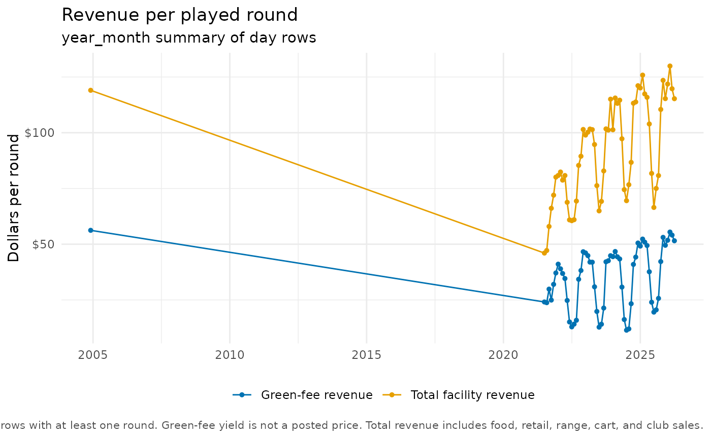

Plot realized revenue per round from a summary
Usage
plot_revenue(summary, metric = c("per_played_round", "per_daylight_round"))Arguments
- summary
A
golfops_summaryfromsummarize_golf_rounds().- metric
per_played_rounduses rows with played rounds in both the numerator and the denominator.per_daylight_rounddivides revenue by the city's daylight-estimated rounds, including rows with no play.
Examples
rounds <- prepare_dobson_rounds()
summary <- summarize_golf_rounds(
rounds[rounds$grain == "day", ],
by = "year_month",
duplicates = "drop_extra"
)
plot_revenue(summary)
